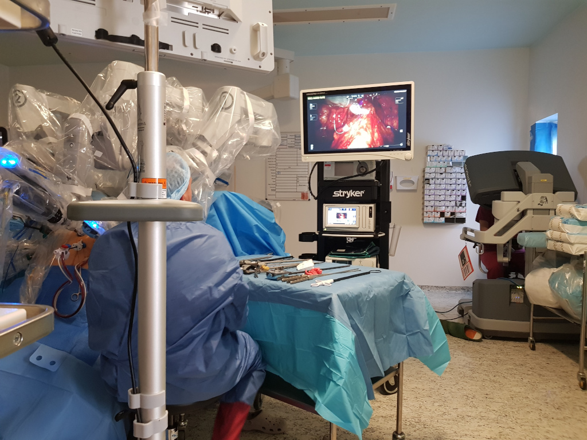

Human-Robot-Interaction
Background
Conducted on 2019 as part of my Digital Anthropology MSc, for UCL. This work was modified into an article for ALT.HRI for the IEEE Human-Robot-Interaction convention, Cambridge, UK 2020.
This work aimed to develop a further understanding and experience on qualitative research withing academic practice while unfolding technology mediated human experiences with cultural theoretical framework. Therefore, I dedicated to human-centred human robot interaction (HRI) with medical technology in the case study of surgeons performing minimal invasive surgery (MIS) using the da Vinci robotic system.
The the da Vinci robotic systems is specifically designed for MIS composed by 3 components; Surgeon Console, Vision Cart and Patient Cart. All of which part of a digital infrastructure that transformed MIS practice to the very core. With analogue tools left behind the surgeons manipulates the robot without ever touching the patient, sitting in the surgeon console with their hands operating the robot from a few meters away.
Challenges
- exposure on a large literature (both HRI, medical technology and MIS) to cover a complex and current topic in research
- finding a way into the field
- critical thinking on a cutting edge technology
- developing further previous theoretical work
- time constraints
Method
- Semi-structured interviews with 6 surgeons
- Ethnographic field work in a specialised robotic assisted surgery department in West London, England, observing 6 MIS surgeries.
Analysis conducted by thematic analysis by establishing a theoretical and raw data codebooks as I created a system of data sheets in order to analyse and articulate themes to be later discussed in an academic fashion.
Solution
The idea that humans enhance their lives and bodies by using tools, extending their abilities and senses beyond their biological bodies is one of the main themes explored in anthropology.
Following cyborg anthropology practice that focus on the connections between technologies and bodies (Gray et al., 1995) I decided to unfold surgeons experience using such a complex medical technology in my findings in three sections; first, Isolation, describing the system’s settings and impact on ergonomics, communication and sense of control on surgeons. Secondly, Enhancement, focusing on the ways in which the system enhances physically and cognitively the surgeons abilities and preference. Lastly, immersive qualities, where I have offered my analysis on the system’s immersive qualities and its affects on surgeons experience while performing surgery, including a video-game, ’in the zone’, relaxing experience with advanced body and place illusion.
In this work I have identified an underline experience all surgeons have discussed with me. A tension surgeons expressed to me, as the tension between ’interacting with’ the da Vinci robot and a feeling of ’being’ the robot, between interacting with the robot as an external tool and thinking about it as an extension of their own body.
I conclude with a discussion on immersive qualities of the da Vinci robotic system as a digital infrastructure based instrument.
This work was presented both for UCL as my MSc research, awarding me with Merit and to the 15th annual conference of alt.HRI international convention for IEEE.
